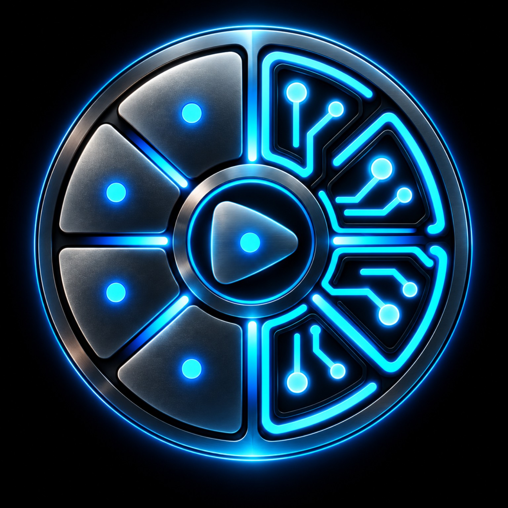

1DRUM
—
Vol --Rev --Del --

V1 nagrywa/importuje, przycina, normalizuje i zapisuje sample lokalnie. Bezpośredni transfer do Orby jest przygotowany w UI, ale pozostaje zablokowany do czasu bezpiecznego odtworzenia protokołu plikowego.
Samo połączenie nie wysyła poleceń do Orby. Kliknij Odczyt, aby pobrać ustawienia. Zamknij inne aplikacje korzystające z Orby przed testem.
Aplikacja próbuje pobrać publiczną bibliotekę nazw presetów Orba Console. Jeśli to się nie uda, możesz wskazać lokalny plik orba-library.json.